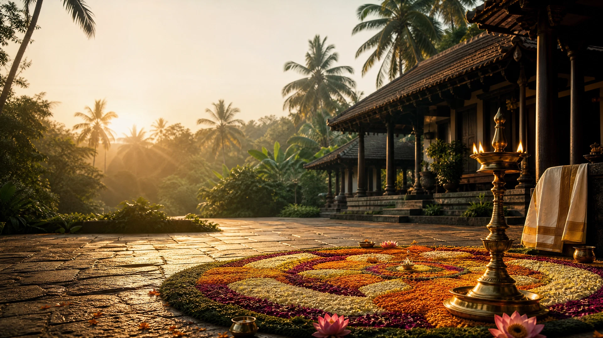
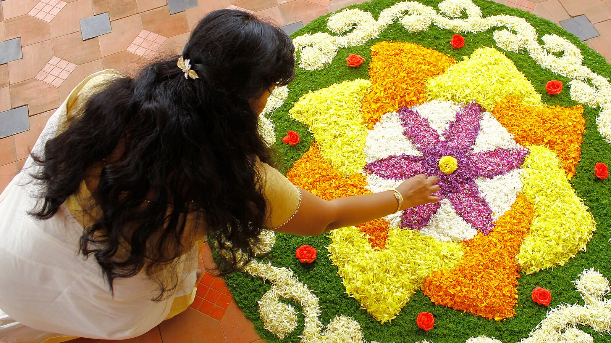
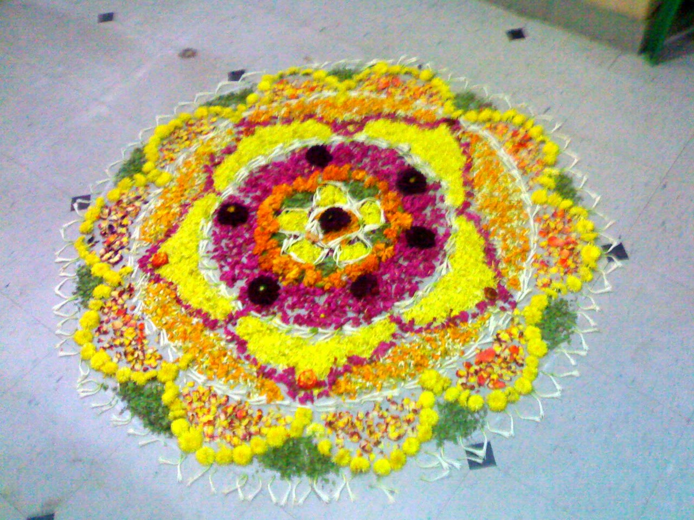
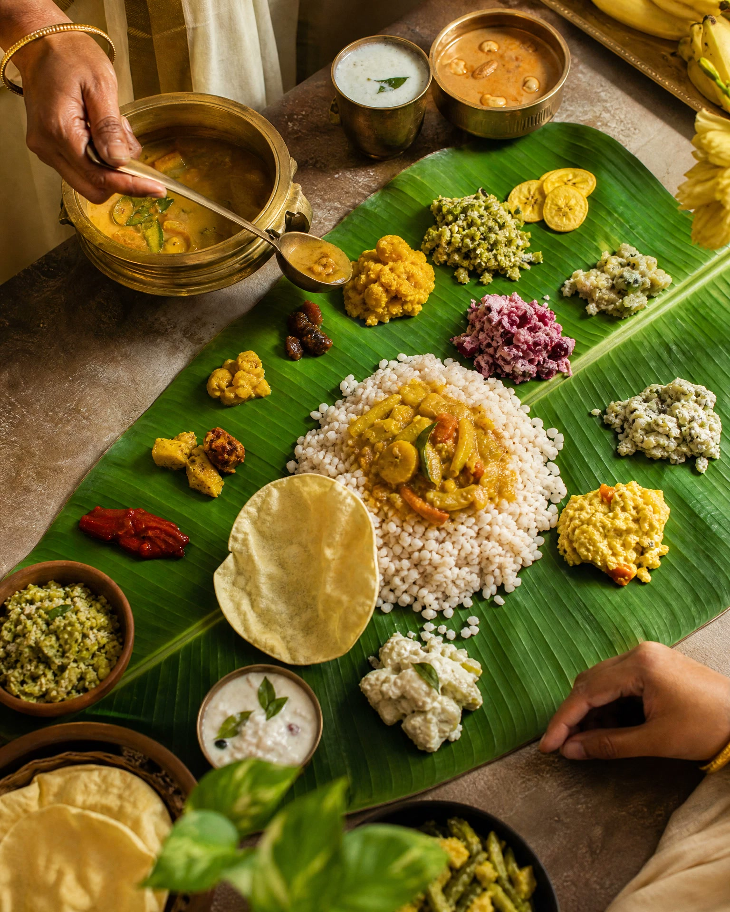
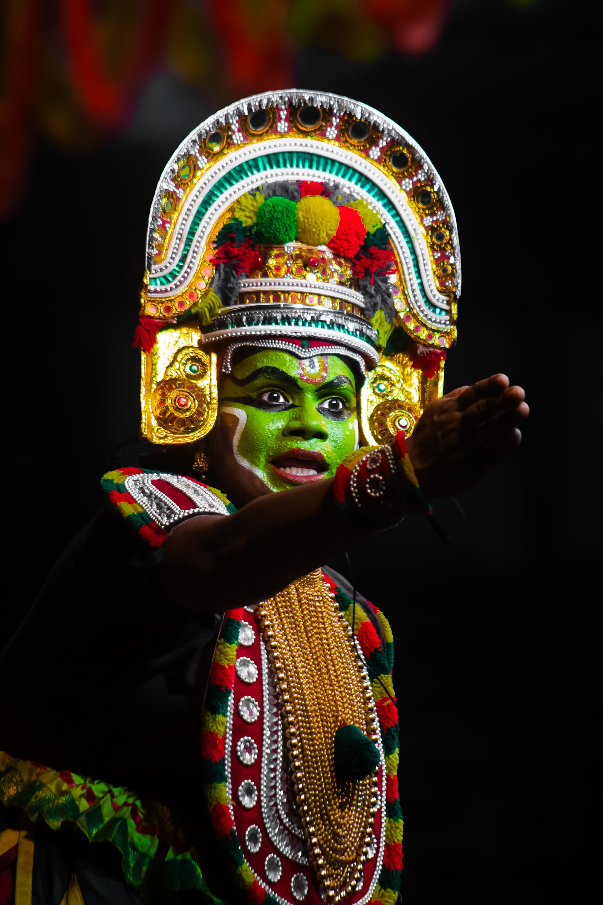
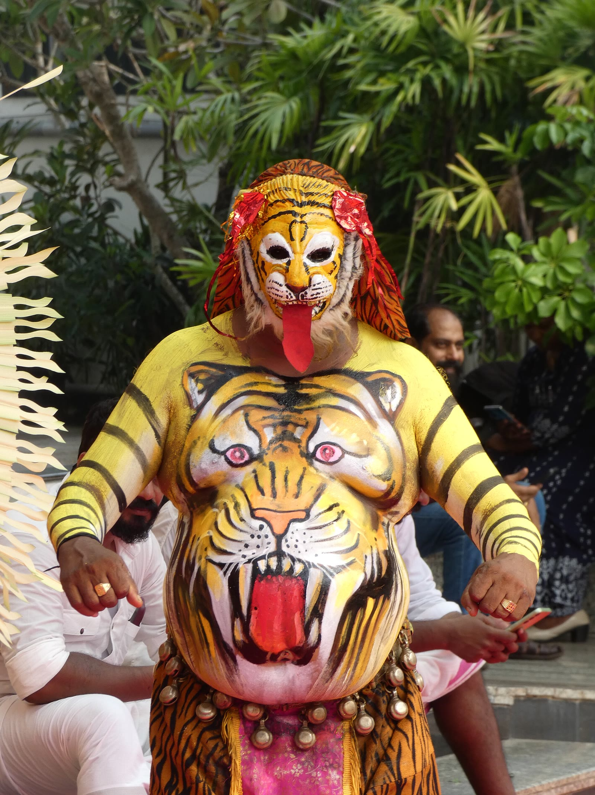
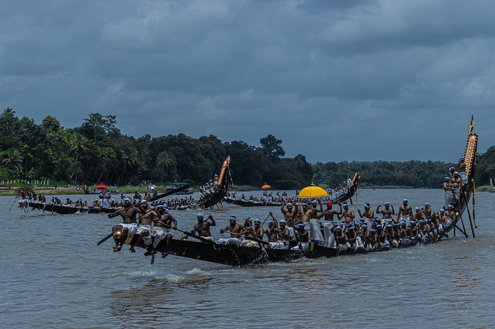

the harvest festival of kerala
Welcome home, MAHABALI
Ten days of flowers, feasts and fury on the water
the year's grandest homecoming.
- 10 days of joy
- pookalam
- sadhya
- boat races
- tiger dance
the legend
The kindest king, who comes home once a year.
Kerala once belonged to Mahabali a king so just that nobody went hungry, nobody lied, and every doorstep was open.
The gods, jealous and uneasy, sent a tiny boy named Vamana to humble him. One wish only: "three steps of land." Mahabali laughed and said yes.
Two steps covered the earth and the sky. For the third, the king bowed and offered his own head. Touched by his goodness, Vamana granted him one thing more to visit his people every year.
That visit is Onam.
His day is Thiruvonam the grandest of the ten.

the countdown
Ten days,
one homecoming.
the flower carpet
A carpet of fresh flowers, laid to say welcome.
The pookalam is the first thing Mahabali sees a flat flower pattern drawn fresh every morning at the doorstep.
It starts small on Atham and gains one ring every day, blooming into a bright giant by Thiruvonam. Only fresh flowers are used.
- chethi
- marigold
- rose
- jasmine
- tulsi leaves

the grand feast
26 dishes.
One banana leaf.
The sadhya is why everyone shows up warm rice and up to twenty-six dishes, served on a single banana leaf.
Eaten with the right hand, in silence, ending with payasam the sweetest final course on earth.
eat like a king. it's what mahabali would do.

the festivities
Dances, drums
& oars.


quick facts
Onam in four lines.
It's the harvest festival of Kerala it falls in Chingam, the first month of the Malayalam calendar.
Celebrated by millions of Malayalis around the world, every single year.
A pookalam uses only fresh flowers one new ring added each morning across the ten days.
New clothes, family games and giving back Onam is a festival of pure joy.

onam ashamsakal
Happy ONAM 2026
Thank you for visiting enjoy the pookalam, taste the sadhya, and wave to the king.
Created by BCA 2nd Year